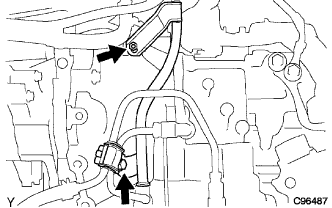

Knock control sensor removal |
| 1. Cooling solution (Toyota genuine super LLC) extract |
Open the radiator kayatsu.
Loosen the radiator drain kotsu plug and extract the cooling solution.
| 2. Fuel Bapefid Hose No.1 Cut off |
Separate the No. 1 Fuuer Bapaf Eed Horse from the slot tortoise body ASSY.
Remove the clamps and disconnect the fuel bapefid hose No. 1 from the air cleaner cap.
| 3. Remove the air cleaner ASSY |
Remove the air cleaner kit and air cleaner hose No.1.
Remove the air cleaner fillyer errage.
Remove the four bolts and remove the air cleaner case, the No.1 air cleannine rets and the air cleannine Retsu.
| 4. Remove the cylinder head cover No.2 |
 |
Remove the four nuts and remove the Cylinder Hetted Cover No.2.
| 5. Trans mission oil filter tube SUB-ASSY |
Remove the oil level gauge from the oilf Irati Ubu.
Remove the Briza Horse from the oilf Irati Ubu.
|  |
Remove the two bolts and remove the oil cooler uve clamps and oilf -Ilat youb from the transxle ASSY.
Remove the O -ring from the oilf Irati Youve.
| 6. Accelerator control cable ASSY disconnection |
Loosen the nut and separate the accelerator control cable ASSY from the accelerator control cable braketto.
| 7. Cut the water bypass hose |
| 8. Water bypass hose No.2 cut off |
| 9. Remove the throttle body ASSY |
Slip the connector of the slot tortrance Posishon sensor and idol speed control valve.
 |
Remove the bolts and two nuts and remove the accelerator control cable braketto and throttle body ASSY.
Take off the gasket from the intake manifold.
| 10. Waterfira Sub-Assy removed |
 |
Separate radiator -in -powered hose, radiator hose No.3 and radiator reservoir tank hose.
Remove the two bolts and remove the waterfifa.
| 11. Cut the ventilation hose |
Cut the ventilession hose from the intake mani -hold.
| 12. Union Two Connet tube hose cut off |
Separate the union tsukonettachi uve hose from the intake manly hold.
| 13. Intake manifold removed |
Cut the wire harness from the intake manifold.
 |
Remove 3 bolts and two nuts in the order of the figure, and remove the intake mani -hold.
Remove the intake manifold gasket from Intake Mani Hold.
| 14. Remove the knock control sensor |
Cut the connector.
 |
Use SST to remove the notcontrol sensor.